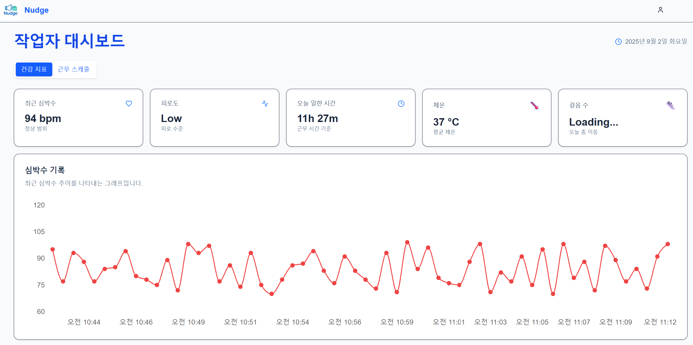
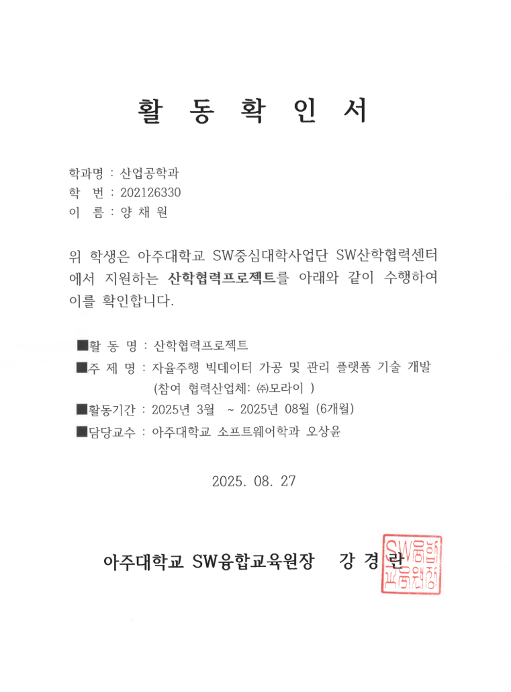
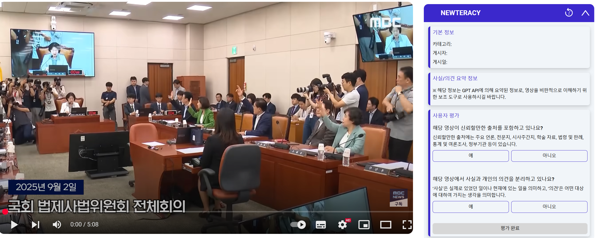
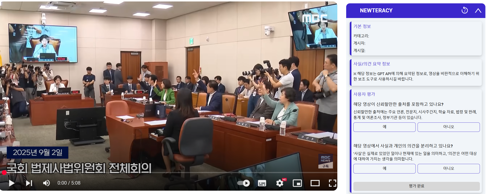
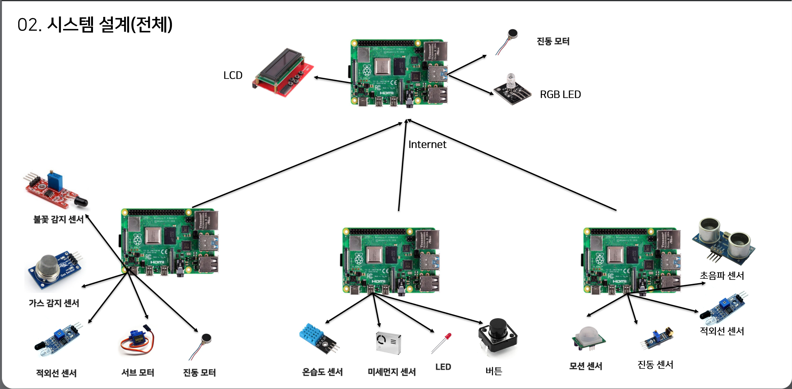
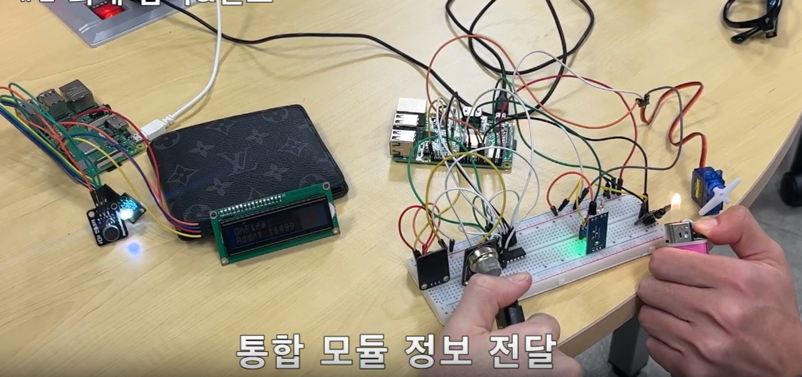
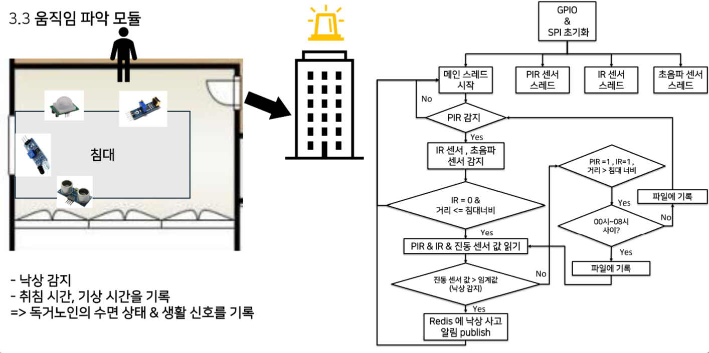

양채원
영문: YANG CHAEWON | 만 23세
휴대전화: 010-3488-7508 | 이메일: kally1239@gmail.com
주소: 경기도 용인시 수지구 만현로 25 102동 1205호
휴대전화: 010-3488-7508 | 이메일: kally1239@gmail.com
주소: 경기도 용인시 수지구 만현로 25 102동 1205호

학력
| 2021.03 ~ 2026.02 | 아주대학교 산업공학과(주) / 소프트웨어학과(복수) (학점 3.7/4.5) |
|---|---|
| 2017.03 ~ 2020.02 | 용인홍천고등학교 |
어학
| 2025.07.13 | TOEIC 860점 (YBM) |
|---|---|
| 2024.03.24 | OPIc IH (ACTFL) |
자격증
| 2025.06.27 | SQLD (SQL 개발자) - 한국데이터산업진흥원 |
|---|---|
| 2024.09.06 | ADsP (데이터 분석 준전문가) - 한국데이터산업진흥원 |
교육/연수
| 교육명 | 교육내용 | 교육기관 |
|---|---|---|
| 멋쟁이사자처럼 대학 백엔드 11기 | Java 및 SpringBoot Framework 기초 학습 및 실습, 해커톤을 통한 프로젝트 진행 | (주)멋쟁이사자처럼 |
| 알고리즘 | 분할정복, 동적계획법, 그래프 알고리즘 등 기본 기법 학습 시간 복잡도 이해 및 알고리즘 분석 방법 학습 |
아주대학교 |
| 컴퓨터 네트워크 | TCP/IP 프로토콜을 중심으로 표준 인터넷 프로토콜 학습 | 아주대학교 |
| 자료구조 | 기본 자료구조와 탐색, 정렬 알고리즘 학습 C언어로 Linked List 및 탐색 알고리즘 구현 실습 |
아주대학교 |
| 오픈소스 SW 입문 | Linux 명령어, Shell Script, Git 활용 버전관리 실습 오픈소스 라이선스 학습 |
아주대학교 |
| 컴퓨터 구조 | ARM 아키텍처 기반 하드웨어 처리 방식 학습 파이프라이닝, 병렬처리, 캐시 등 최적화 개념 학습 |
아주대학교 |
| 빅데이터 시스템 | AWS, GCP 클라우드 및 Hadoop/Spark 기반 빅데이터 처리 학습 Hadoop/PySpark 비정형 데이터 처리 실습 |
아주대학교 |
| 운영체제 | 운영체제의 자원 관리 및 추상화 방법 학습 C언어로 스케줄링, 페이징, 가상 메모리 구현 실습 |
아주대학교 |
| 기계학습 | 대표적인 기계학습 알고리즘의 원리 및 구조 학습 기계학습 알고리즘 응용 프로젝트 수행 |
아주대학교 |
수상
2025.07.31

2025년도 1학기 아주대학교 공과대학 Dean's List
아주대학교 공과대학
2025.06.10

AJOU SOFTCON 연구부문 장려상
아주대학교 SW융합교육원
2025.05.17

아주 프로그래밍 경시대회 Div.2 우수상
아주대학교 SW중심대학사업단
2024.01.29

AI Challenge for Biodiversity 장려상
한국 Microsoft
2024.06.14

학생이 만드는 교양교과목 공모전 우수상
아주대학교 다산학부대학
프로젝트 경험
물류센터 작업자 과로 방지 서비스 (산업공학종합설계)
- 기간: 2025.03.03 ~ 2025.06.30
- 참여 인원: 5명
- 링크: https://v0-admin-and-worker-accounts.vercel.app
- 사용 언어/기술: JavaScript(Next.js), Python(Django), Firebase
- 프로젝트 소개: 실시간 작업량 모니터링 및 피로도 기반 작업 스케줄 자동 배정 서비스
- 담당 업무: Django 기반 API 서버 개발, Firebase 구조 설계 및 연동, 프론트엔드 개발
- 프로젝트 수행 사항:
- 작업자의 심박수를 실시간으로 수집하고 분석하여 심박변이도(RMSSD) 계산
- 분석된 피로도에 기반해 스케줄링 알고리즘 적용 후 업무 날짜 자동 배정
- Next.js를 이용한 관리자/작업자 대시보드 구현
- Firebase Realtime Database, Firestore에 데이터 저장 및 관리
- 심박수처럼 실시간 수집이 필요한 데이터는 Firebase Realtime Database로, 작업자/관리자 프로필 정보는 Firestore로 분리하여 데이터 특성에 따른 적절한 DB 선택
- 주 단위 작업 스케줄링 및 일 단위 피로도 분석을 배치 처리로 하여 일정 시간마다 자동 실행
- Firebase SDK의 클라이언트 API를 통해 CRUD 요청을 처리함
- 팀원 피드백 기반으로 UI/UX를 반복 개선하여 사용자 편의성을 향상함
- OpenAI GPT API를 활용하여 작업자의 생체 데이터를 바탕으로 자동 리포트를 생성하고, 관리자 화면에서 실시간 피로도 상태를 직관적으로 확인할 수 있도록 구현함

시스템 구성도

서비스 화면

Firebase Firestore 구조 ERD

산학협력프로젝트: 자율주행 데이터 플랫폼 개발 참여 및 자율주행 강화학습 연구
1. 자율주행 데이터 서비스 플랫폼 개발
- 기간: 2025.06.30 ~ 2025.08.30
- 참여 인원: 4명
- 사용 언어/기술: Express, TypeScript, React, Docker, Linux
- 프로젝트 수행 사항:
- 자율주행 데이터 관리·조회가 가능한 웹 기반 서비스 플랫폼 개발
- Express 기반으로 자율주행 메타데이터를 pagination 없이 전부 조회하는 API 개발
- Docker 기반 MongoDB 컨테이너 실행 및 웹 서버와 연동
- 배운 점: DDD 구조 기반의 프로젝트 아키텍처를 이해하고, Docker 환경 구성과 Express.js API 개발 방법 습득
2. Actor-Critic 모델 기반 자율주행 강화학습 연구
- 기간: 2025.03.02 ~ ing
- 참여 인원: 3명
- 사용 언어/기술: Python, PyTorch
- 프로젝트 수행 사항:
- PID control로 생성한 오프라인 자율주행 데이터를 이용하여
- Offline-to-online learning을 적용한 자율주행 강화학습 제어 모델 학습 수행
- 배운 점: 강화학습 기반 제어 알고리즘 학습을 위한 실험 환경 구성 및 딥러닝 학습/검증 프로세스 이해
 

멋쟁이사자처럼 해커톤 - 디지털 리터러시 향상 크롬 익스텐션
- 기간: 2023.03.06 ~ 2023.08.31
- 참여 인원: 4명
- 사용 언어/기술: Java, Spring Boot, Spring JPA, MySQL, AWS
- 프로젝트 소개: 유튜브 가짜뉴스 판별을 보조해 디지털 리터러시 향상을 돕는 크롬 익스텐션
- 프로젝트 수행 사항:
- Spring Boot 기반 백엔드 개발
- MySQL DB에 서비스 회원 정보 및 유튜브 응답 데이터를 저장
- Spring JPA 기반 ORM 매핑 및 Repository 계층 구성
- GPT API를 활용하여 유튜브 영상 스크립트 분석 기능 구현
- AWS EC2 인스턴스를 활용한 백엔드 서버 배포
- 배운 점:
- Spring JPA를 사용해 도메인 객체와 MySQL 테이블을 매핑하여 관리하는 방법을 이해함
- DTO/DAO 분리 설계를 통해 명확한 데이터 흐름을 구성함
- AWS EC2 환경에서 Spring Boot 서버를 배포하고 실제 서비스를 운영해보는 경험을 함
- 무박 2일이라는 제한된 시간 내에 기획부터 개발&배포까지 진행하며 한계에 도전해보고 신속한 개발 및 의사소통 능력을 향상함


자율주행 시계열 데이터 최적 경로 탐색 연구 - 한국인터넷정보학회 춘계학술대회 논문 게재
- 기간: 2025.01.02 ~ 2025.04.22
- 참여 인원: 3명
- 사용 언어/기술: Python, NetworkX, TensorFlow
- 프로젝트 수행 사항:
- NuScenes 자율주행 오픈소스 데이터셋 기반, 위치별로 여러 시간대에 목격된 장애물의 개수를 집계하여 그래프 구조로 모델링
- 다익스트라 알고리즘을 기반으로 거리와 장애물 가중치를 동시에 고려하는 목적 함수 설계
- 제안 기법과 기존 다익스트라를 비교 실험하여, 장애물 회피 성능과 거리 변화율을 분석
- JavaScript, Flask로 클릭을 통해 노드의 연결관계를 생성하고 저장하는 데이터 전처리 툴 제작
- 논문 작성
- 성과/수상: 한국인터넷정보학회 춘계학술발표대회 논문 게재
- 배운 점:
- 연구 결과를 독자 입장에서 설득력 있게 전달하기 위해 문제 정의부터 결과 해석까지 논리 흐름을 구성해보는 과정이 중요하다는 걸 체감함
- 1만 개 정도의 노드 데이터를 수작업으로 처리하는 비효율을 느끼고 직접 전처리 툴을 만들어 사용하면서 효율을 높일 수 있는 지점을 찾아 개선하는 것의 중요함을 깨달음


미국 주식 데이터 분석 프로젝트 - 2024 NH 투자증권 빅데이터 경진대회 본선 진출
- 기간: 2024.09.02 ~ 2024.11.20
- 참여 인원: 3명
- 사용 언어/기술: Python, Pandas, Scikit-learn, Django, SQLite, Azure OpenAI API
- 프로젝트 수행 사항:
- Django 서버에서 yfinance, Pandas, NumPy 를 통해 시세 데이터를 불러오고 분석
- Yahoo Finance에서 나스닥 상위 100개 종목의 시세 데이터를 수집해 Django 서버 내부 SQLite DB에 저장
- 마코위츠 포트폴리오 이론 기반의 최적 자산 배분 알고리즘 구현
- 포트폴리오 도출 과정을 ProcessPoolExecutor로 병렬 처리하여 계산 시간 단축
- Python PDF 라이브러리와 Azure OpenAI를 이용하여 초보 투자자 대상 리포트 생성 프로그램 제작
- 성과/수상: NH 투자증권 빅데이터 경진대회 본선 진출
- 배운 점:
- 생성형 AI를 금융 서비스에 접목해 금융 리터러시 격차를 해소할 수 있는 가능성을 확인함
- 병렬 처리를 통해 포트폴리오 최적화 알고리즘의 연산 병목을 개선함

침수 예측 지도 웹 서비스 개발 (공개 SW 개발자 대회)
- 기간: 2024.06.30 ~ 2024.08.23
- 참여 인원: 4명
- 사용 언어/기술: React, Leaflet.js, Django, AWS, XGBoost
- 프로젝트 수행 사항:
- 기상청 API로 수집한 시간별 강수량 데이터와 국토정보플랫폼에서 획득한 지형 고도 데이터를 feature로 사용하여 침수 가능성을 예측하는 XGBoost 모델 학습
- 모델 학습 결과를 기반으로 지역별 침수 가능성을 예측하고, Leaflet.js를 활용해 지도에 시각화
- 침수 위험도를 색상 그라데이션 마커로 표현하고, 사용자가 선택한 행정구역에 따라 지도 자동 줌인 기능 구현
- 실시간 API 호출에 따른 응답 지연 문제를 해결하기 위해 강수 데이터를 주기적으로 SQLite DB에 저장하고 사전 예측값을 저장하는 배치 파이프라인 구성
- Django 백엔드에 예측 결과 요청용 API 엔드포인트 구성, Gunicorn + EC2 환경에서 서비스 배포
- 배운 점:
- 연산을 사전에 돌리고 저장하는 구조로 바꾸는 경험을 함 — 무작정 API 때려넣는 것보다 구조가 훨씬 중요하다는 걸 느낌
- 사용자 입장에서 “바로바로 보이는 시각화가 빠르고 직관적인가”가 더 중요하다는 걸 실제 웹서비스 구현하면서 체감함
- 침수 여부를 이진 분류로 정의하고 시간 누적 강수량 기준을 목적변수로 삼아 XGBoost 모델 학습을 진행해봄
- 지도 시각화를 위해 leaflet.js를 사용하며 marker 표현 방식이나 줌/색상 처리 방식 등을 실제 사용자를 고려하여 알아보기 쉽게 구성함
- 데이터 수집부터 웹 UI에 시각화까지 전 과정을 고민하는 경험을 함


해양 생태계 데이터 모니터링 플랫폼 제안 (Microsoft AI Challenge)
- 기간: 2023.12.20 ~ 2024.01.29
- 참여 인원: 3명
- 사용 언어/기술: Python, Numpy, Pandas, Pytorch
- 프로젝트 수행 사항:
- AI를 활용한 해양 생태계 모니터링 아이디어 제안
- AI Hub에서 제공하는 어류 이미지 데이터로 ResNet 기반 어종 분류 모델 학습 진행
- 어종 종류, 치어/성어, 어병 개체 수 등 생태 지표를 통계적으로 추출하는 시나리오 설계
- 분류 결과를 클라우드 DB에 저장한 뒤, 시각화 플랫폼에서 웹 대시보드 형태로 조회하는 구조 제안
- 기획 단계에서 서비스 흐름도 작성 및 기술 도입 타당성 분석
- 배운 점:
- 사람을 돕는 도구로써 AI를 어떻게 활용하면 될지 방법을 고민하고 기획을 해봄
- ResNet 모델을 실제 이미지 데이터에 적용하여 기술의 실현 가능성과 한계를 검토함
- 기획 아이디어를 타당성, 구현 가능성, 사회적 파급력 관점에서 설득력 있게 제안하는 과정을 경험함

빅데이터 시스템 프로젝트 – Hadoop&PySpark로 파생상품 공시문서 데이터 분석
- 기간: 2024.03.10 ~ 2024.06.07
- 참여 인원: 3명
- 사용 언어/기술: Python, PySpark, Hadoop, GraphFrames, KMeans, GCP Dataproc
- 프로젝트 소개: 금융감독원 DART 공시 시스템에서 수집한 약 20GB 규모의 파생상품 공시문서를 분석하여 우리나라 파생상품 시장의 기초자산 편중성과 리스크 구조를 파악함.
- 담당 업무:
- DART API 기반 공시문서 크롤링 및 XML 파싱 자동화
- 기초자산-파생상품 간 관계 기반 네트워크 그래프 생성 및 PageRank 분석
- 스파크 기반 KMeans 클러스터링을 통해 파생상품 유형 분류 및 발행사-클러스터 간 분포 분석
- GCP Dataproc으로 마스터 노드 1개, 작업자 노드 3개의 분산 환경에서 전체 데이터 처리 및 분석 수행
- matplotlib을 이용해 분석 결과를 그래프·히트맵 등으로 시각화
- 배운 점:
- 대규모 비정형 문서 데이터를 정제하고 분석하는 파이프라인 구축 경험
- 금융 데이터 구조를 이해하고 그래프로 구조화하여 관계를 기반으로 한 인사이트 도출
- PySpark, Hadoop, GCP Dataproc을 이용한 대용량 빅데이터 처리 경험


시스템 프로그래밍 팀 프로젝트 - 고독사 위험 계층을 위한 안전 모니터링 시스템
- 기간: 2024.09.30 ~ 2024.12.22
- 참여 인원: 4명
- 사용 언어/기술: C, Raspberry Pi, GPIO, Pthreads, Redis, SPI, Sensor Interface
- 프로젝트 소개: 센서를 기반으로 낙상 여부를 실시간 감지하고, 감지된 이벤트를 Redis를 통해 전달하는 안전 모니터링 시스템 개발
- 담당 업무:
- 낙상 판단 로직 설계 및 구현 (침대 위 존재 → 침대 벗어남 → 강한 진동)
- GPIO 직접 제어 기반 PIR, IR, 초음파 센서 처리 로직 구현
- 멀티스레딩 기반 센서 데이터 비동기 수집 및 스레드 동기화
- SPI ADC 프로토콜 기반 진동센서 제어 및 Redis 메시지 송신 구현
- 실제 낙상 시뮬레이션을 통한 테스트 및 통합 점검 수행
-

낙상 감지 흐름도 - 침대 위 상태 인식 후 낙상 이벤트 발생 조건 만족 시 감지
- 배운 점:
- 센서 조합을 통한 맥락 기반 추론의 중요성 체득
- GPIO를 통한 하드웨어 제어와 멀티스레딩 프로그래밍 경험
- 낮은 수준의 디바이스 제어와 실시간 이벤트 감지 시스템의 작동 원리 이해
- 임베디드와 네트워크 기술의 연결성 및 통합 개발 경험
- 현장 테스트의 중요성과 시나리오 기반 시스템 검증의 필요성 체감


빅데이터 분석 프로젝트 - 서울시 배리어프리 상위권 법정동 도출
- 기간: YYYY.MM.DD ~ YYYY.MM.DD
- 참여 인원: N명
- 사용 언어/기술: 기술1, 기술2, 기술3
- 프로젝트 소개: 한두 문장으로 개요 요약.
- 담당 업무: 본인이 맡은 역할·모듈
- 성과/수상: 정량/정성 성과
- 배운 점: 핵심 인사이트

운영체제 프로젝트 수행
Project #1: My Amazing Shell
- 기간: 2024.03.26 ~ 2024.04.12
- 참여 인원: 개인
- 소스 코드: https://git.ajou.ac.kr/chaewonyang/pa1.git
- 사용 언어/기술: C, Linux System Call (fork, exec, wait, pipe 등)
- 프로젝트 소개: 간단한 쉘 프로그램을 직접 구현하여 외부 명령 실행, 디렉토리 변경, alias 기능, 파이프 연결을 지원.
- 수행 사항: run_command() 구현, cd/alias 처리, 프로세스 파이프 연결
- 배운 점: 프로세스 생성·제어, exec 계열 함수 활용, 파이프 IPC 메커니즘 이해
과제 #2: Processor Scheduler Simulator
- 기간: 2024.04.19 ~ 2024.05.04
- 참여 인원: 개인
- 소스 코드: https://git.ajou.ac.kr/chaewonyang/pa2.git
- 사용 언어/기술: C, 운영체제 스케줄링 이론, 리스트 자료구조
- 프로젝트 소개: 시뮬레이터 프레임워크 위에서 FCFS, SJF, STCF, RR, Priority, Aging, PCP, PIP 등 스케줄러 구현.
- 담당 업무: pa2.c 내 각 스케줄러 알고리즘 함수 구현, ready queue/자원 관리 처리
- 성과/수상: 550점 + Git repo 보너스 20점, 스케줄링 정책 전반 구현
- 배운 점: 우선순위 기반 스케줄링, Aging/PCP/PIP 같은 동시성 문제 해결 기법
과제 #3: Virtual Memory Simulator
- 기간: 2024.05.14 ~ 2024.06.07
- 참여 인원: 개인
- 소스 코드: https://git.ajou.ac.kr/chaewonyang/os-pa3.git
- 사용 언어/기술: C, 가상메모리 관리, 페이징, TLB, Copy-on-Write
- 프로젝트 소개: 페이지 테이블·TLB를 포함한 가상메모리 시뮬레이터 구현. alloc/free, read/write, fork, COW 기능 지원.
- 담당 업무: pa3.c 내 page allocation/deallocation, TLB 캐시 관리, COW 로직 설계 및 구현
- 성과/수상: 600점 만점(코드 500점 + 문서 100점), Git repo 보너스 10점
- 배운 점: 가상 메모리 동작 원리, TLB 캐시 정책(FIFO), COW 기반 프로세스 복제 메커니즘 이해
활동 및 경험
아주대학교 분산병렬컴퓨팅 연구실 인턴 (2025.06 ~ 2025.08)
자율주행 강화학습 연구, 자율주행 데이터 서비스 플랫폼 개발 참여
자율주행 강화학습 연구, 자율주행 데이터 서비스 플랫폼 개발 참여
산업공학 종합설계 팀 프로젝트 (2025.03 ~ 2025.06)
물류센터 작업자 과로 방지 서비스 개발 (웹 대시보드·서버)
물류센터 작업자 과로 방지 서비스 개발 (웹 대시보드·서버)
중앙도서관 면학장학생 (2024.09 ~ 2024.12)
업무 매뉴얼 제작, 운영 적응도 향상
업무 매뉴얼 제작, 운영 적응도 향상
대외활동 (2023.12 ~ 2024.11)
NH투자증권 빅데이터 경진대회 본선, 공개SW 개발자대회, MS AI Challenge 등 참여
NH투자증권 빅데이터 경진대회 본선, 공개SW 개발자대회, MS AI Challenge 등 참여
동아리활동 (2023.03 ~ 2025.06)
SW학과 소학회 한터(운영체제·코딩테스트 스터디), 멋쟁이사자처럼 백엔드 과정 수료
SW학과 소학회 한터(운영체제·코딩테스트 스터디), 멋쟁이사자처럼 백엔드 과정 수료
학술대회 (2025.01 ~ 2025.04)
한국인터넷정보학회 춘계학술발표대회 논문 발표 (자율주행 데이터 기반 경로 탐색)
한국인터넷정보학회 춘계학술발표대회 논문 발표 (자율주행 데이터 기반 경로 탐색)
기술 경험
- Python, Java, Django, Spring Boot, REST API, SQL
- 빅데이터 처리(AWS, Hadoop, Spark), 데이터 분석 및 시각화
- 클라우드 인프라 기본(AWS/GCP), CI/CD, Git
자기소개
금융 데이터 분석과 서비스 개발에 관심을 가지고 있으며, 프로젝트와 대회 경험을 통해 시스템 최적화, 사용자 경험 개선, 검증 기반 개발을 배웠습니다. 문제 정의와 데이터 기반 검증을 중시하며, 꾸준한 학습과 성실함을 바탕으로 빠르게 적응하고 협업할 수 있습니다.
2025년 8월 17일
성명: 양채원 (인)
성명: 양채원 (인)